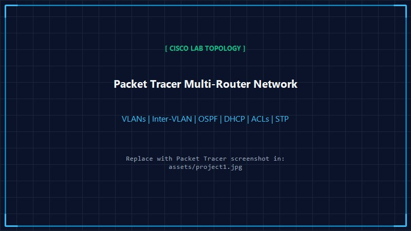

Packet Tracer Lab
Cisco IOS Simulation
Cisco Networking Lab — Packet Tracer
Designed and configured multi-router network topologies using Cisco Packet Tracer to practice enterprise routing, switching segmentation, and traffic security.
Key Features & Implemented Concepts:
- VLAN Configuration & Inter-VLAN Routing: Partitioned broadcast domains and enabled routed communication between multiple departments.
- Network Segmentation: Applied logical segmentation across switch ports and trunk links for security and isolation.
- OSPF Dynamic Routing: Configured Open Shortest Path First (OSPF) across routers for dynamic, automated routing table convergence.
- DHCP Services: Implemented centralized DHCP pools for automated IP address and gateway allocation to client devices.
- ACL Configuration: Deployed Access Control Lists to enforce packet filtering, restrictive inbound/outbound rules, and access control.
- STP/RSTP & EtherChannel Concepts: Practiced Spanning Tree Protocol to eliminate layer-2 loops and explored LACP/EtherChannel link bundling.
- Network Connectivity Testing & Troubleshooting: Conducted ping sweeps, traceroute hops, and Cisco show commands to diagnose and verify connectivity.
My Contribution:
Designed the multi-router topology in Cisco Packet Tracer from scratch; configured router sub-interfaces for 802.1Q encapsulation; defined OSPF area routing; authored Standard and Extended ACLs; validated DHCP lease distribution; and resolved simulated cabling and interface mismatch issues.
Technologies Used:
Cisco Packet Tracer
Routers
Switches
VLANs
Inter-VLAN Routing
OSPF
DHCP
ACLs
STP/RSTP
LACP / EtherChannel
Network Troubleshooting

assets/project1.jpg
// CONCEPTUAL LAB TOPOLOGY (VISUALIZATION)